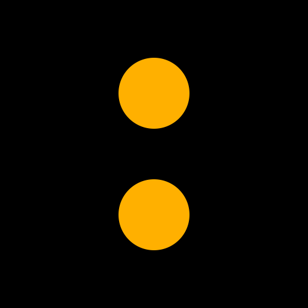

Denne siden er et arbeidsverktøy, ikke en produktflate: tokens og
kjernekomponenter rendret med de ekte stilarkene (css/base.css,
css/layout.css, css/cards.css) — ingen duplisert
CSS. Fargeverdiene under er lest live fra CSS-variablene (bytt tema med
◐-knappen for å se begge). design/tokens.json er den
maskinlesbare fasiten som binder denne siden, DESIGN.md og
ios/Sportivista/DesignTokens.swift sammen — se
tests/design-tokens.test.js.
Referanse: DESIGN.md · design/tokens.json · design/brand/BRAND.md · kolonet.svg
{kind=link}
Farger
Verdiene byttes med temaet — trykk ◐ i toppen. Nøytraler er Apple-systemfarger på iOS; her er de web sine base.css-egenverdier.
Typografi
Systemfont-stack (San Francisco-familien) overalt unntatt ordmerket, tidskolonnen og delekortene — de tre flatene bærer display-fonten Space Grotesk (WP-183, --display; SIL OFL, selvhostet subsett med tabulære sifre bakt inn). iOS binder hver rolle til en Dynamic Type-tekststil; web-verdiene under er de faktiske font-size-ene i CSS-en (se design/tokens.json for avvik mot DESIGN.md sin prosa-tabell).
I DAG
Rytme & layout
8pt-basisgrid (4pt finjustering) — se ios/Sportivista/DesignTokens.swift SportivistaSpacing + design/tokens.json.
Én lesekolonne, maks 640px, sentrert (--max-w) · fast tidskolonne 120px (--time-col, 112px på smale skjermer) · kort-hjørne 12px · minste tapp-mål 44px.
Merkelåsen — kolonet
Full spek i design/brand/BRAND.md. Kildevektor: design/brand/kolonet.svg — to amber sirkler, radius 118 / avstand 168 på 1024-rammen.

SportivistaWordmark + kolon: null mellomrom (.wordmark-lockup), kolonet ett hakk tyngre enn ordmerket (WP-183: display-fontens SemiBold 600 + Bold 700, likt på iOS, widget og web), én tilgjengelighets-etikett («Sportivista»). Merkelåsen er nå lik på begge flater (harmonisert i WP-98): ordmerket i tekstfarge (--fg / label), kun kolonet amber (en av de sparsomme amber-aksentene i base.css) — se BRAND.md.
Knapper & tagger — ingen pills
DESIGN.md sin forbudsliste utelukker pills/badges. Handlinger er flat tekst med hover-understrek mot amber; tagger er en punktseparert linje, aldri chips.
EliteserienFormel 1Sjakk-VM
Entitets-avatar
Radens ENE anker for hvem den handler om, rendret med den ekte js/entity-avatar.js — samme 24px-boks på alle fire trinn (DESIGN.md § Entitets-avatar). Rekkefølgen er bindende: ekte merke → flagg → farge-monogram → sportglyf. Merket vises UENDRET (ingen tint, beskjæring eller maske) og lastes fra vår egen origin, aldri et CDN.
Agenda-rad-anatomi
Nøyaktig samme DOM som docs/js/dashboard.js sin eventRow() bygger — kopiert her, ikke en tilnærming. Ærlighet: ukjent kanal viser et rolig «–», aldri en påstand.
I DAG
[• amber] — «must-see»: favoritt / viktighet ≥ 4 / norsk. Aldri en emoji, aldri en stripe eller kort — kun prikken.